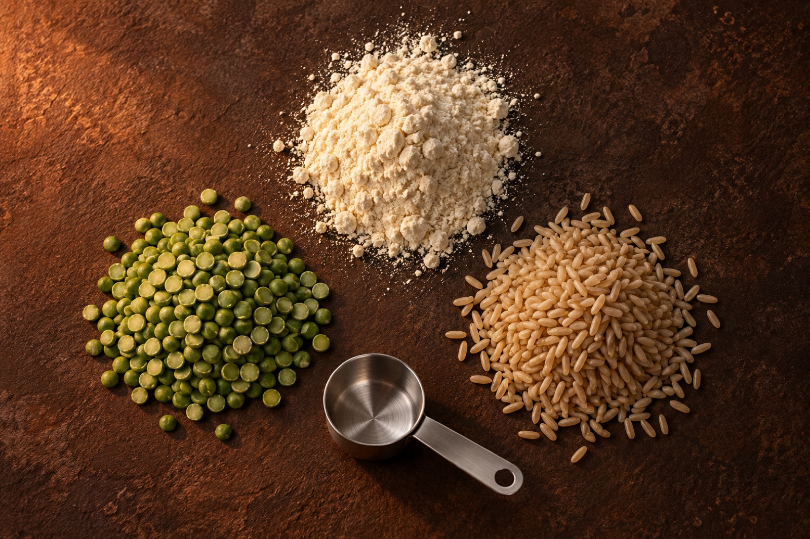

Everything printed on the back of the pack, retyped here so you can read it before you buy instead of after.

Soy protein isolate carries most of the load. Pea protein and brown rice protein fill in behind it, which is what gets the amino acid profile closer to complete than any single plant source manages alone.
There is no whey in this. If dairy protein has been sitting badly with you, that is the reason to try it.
| Nutrient | Per 100 g |
|---|---|
| Protein | 45 g |
| Energy | 400.6 kcal |
| Carbohydrate | 26 g |
| Total sugars | 2.23 g |
| Added sugars | 0 g |
| Dietary fibre (incl. FOS) | 8.8 g |
| Total fat | 11 g |
| Saturated | 2.71 g |
| Monounsaturated | 3.13 g |
| Polyunsaturated | 3.14 g |
| Linoleic acid | 4.65 g |
| Trans fat | 0.025 g |
| Sodium | 420 mg |
α-amylase, protease, lipase, cellulase and lactase. They are there so a 22.5 g hit of plant protein does not sit in your stomach like a brick.
Fructo-oligosaccharides. Part of the 4.4 g of fibre per serving, and the part that feeds gut bacteria rather than just adding bulk.
Garcinia Cambogia extract (60% HCA) and Cissus Quadrangularis extract. Both are standard in Indian formulations; both are declared with their amounts on the pack.
Sucralose (INS 955) and acesulfame potassium (INS 950). That is how you get 22.5 g of protein at 200 kcal without added sugar. Named on the front, not buried.
A, D3, E, K1, B1, B2, B3, B5, B6, B12, C, folic acid, biotin, plus calcium, magnesium, potassium, phosphorus, iron, zinc, copper, chromium, selenium, manganese, molybdenum and iodine.
No whey, no added sugar, no proprietary blend. Contains soy, and it is made in a facility that also handles wheat, milk, oats and nuts — so if those are a problem for you, this is not your product.
Manufactured by Zeon Lifesciences Ltd at Paonta Sahib under FSSAI licence 10013062000225. Marketed by Shiv Protein Private Limited out of Darya Ganj, Delhi.
Both licence numbers are on every pack. If something is wrong with a batch, the number on the box is how you and we find it.